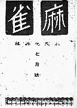
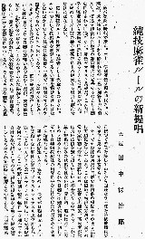

昭和初期、たくさんの麻雀団体があった。その中で大きな団体は日本麻雀聯盟と関西麻雀聯盟の二つ。田中保治郎は その関西麻雀聯盟の会員と思われるが、それ以外は不詳である。
※当時の関西雀界の様子は、「麻雀賛（家川弥吉 昭和44/11刊）」に詳しいが、そこに記された関聯の役員欄にも、名前が出ていない。
当時、林茂光主宰の日本麻雀研究所が「麻雀」というタイトルの麻雀専門誌を刊行していた。その「麻雀」の昭和６年７月号に「純技麻雀の新提唱」という論考を掲載した。
 
この論考は１ゲームという単位の確立など今日でも曖昧になっている点を論じるだけでなく、振りサイを行うにしても開門箇所の恒常化も提唱している。さらに流局や包則など競技的に不要なルール、またゲームの公平性から連荘の廃止を論じるなど 当時としては最先端の内容である。
もとより１ゲームの単位を四荘16圏64局とするとか、一度振りとはいえ振りサイを行うなど純麻雀とはいくつか異なる点はあるが、これは時代の制約である。
現時点では事績も不詳な人物であるが、競技麻雀揺籃期に個々のルール論ではなく、１ゲームの単位の問題を最初に指摘した論考を表した人物として麻雀史に名をとどめる。＃σ(-_-)提唱の純麻雀と同様の名称であることは、偶然および必然の一致。
|